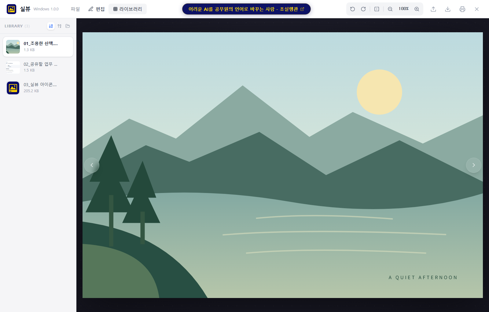
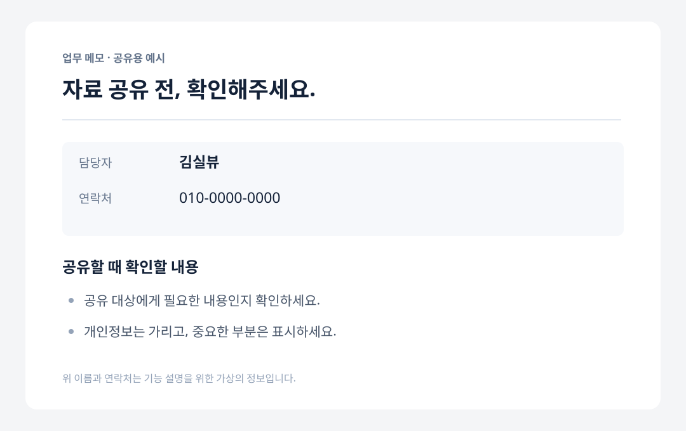
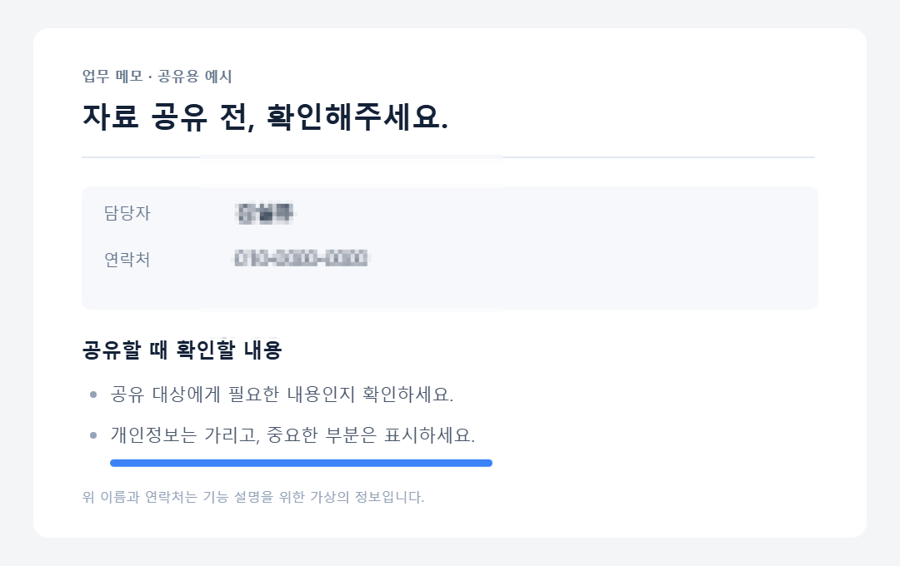
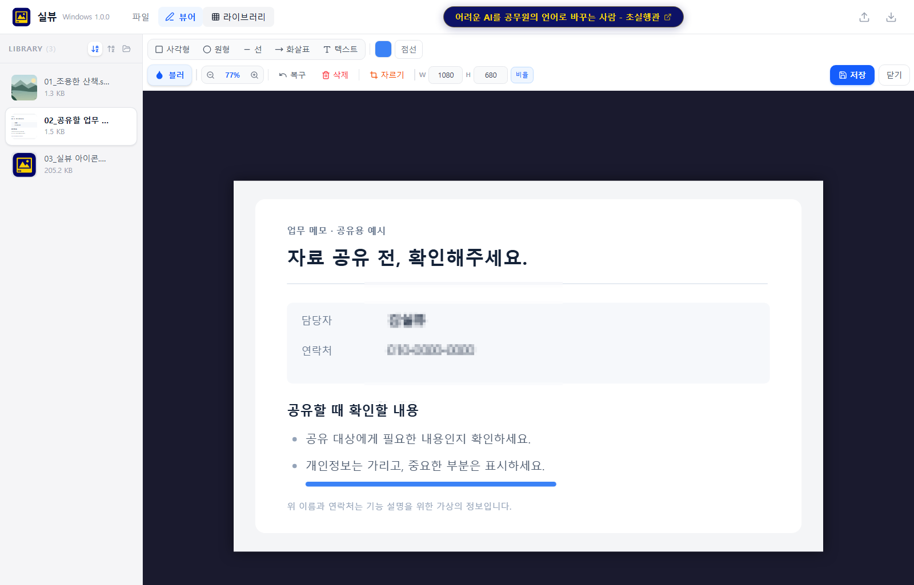

Windows 설치형 · 1.0.0
내 PC의 기본 이미지 뷰어로.
탐색기에서 열고, 같은 폴더를 넘겨 보고,
필요한 편집까지 한 프로그램에서.
- 이미지 하나로 같은 폴더 자동 이어보기
- 화면 맞춤 · 다음 이미지 배율 유지
- 모자이크 · 도형 · 텍스트 · 자르기
사진 보는데, 광고부터 닫아야 하나요?
사진 한 장 열고, 같은 폴더를 쭉 넘겨 보고.
가릴 곳은 모자이크하고, 중요한 곳에는 표시를 더하세요.
일상에 필요한 기능을 담은 이미지 뷰어·편집기, 실뷰.
무료 사용회원가입 없음이미지 로컬 처리
Windows 64비트 · 같은 폴더 자동 연속 보기는 설치형에서

보기부터 편집까지, 한 프로그램에서.
실제 앱 화면 · 예시 이미지팝업 닫기부터 시작하지 않아도 됩니다.
사진을 열면, 사진에 집중하세요.
사진을 가리는
광고 창은 없습니다.
설치형에 다른 프로그램을
끼워 넣지 않습니다.
사진 보기와 간편 편집.
자주 쓰는 작업을 한곳에.
제작자 소개 링크는 있습니다. 이미지를 가리는 팝업 광고는 표시하지 않습니다.
01 / 간편 뷰어
탐색기에서 더블클릭하거나 실뷰에서 이미지를 여세요. Windows 설치형은 같은 폴더의 지원 이미지를 자동으로 불러옵니다. 폴더 업로드 절차는 필요 없습니다.
왼쪽에서 이미지를 골라 이동하거나, 방향키로 편하게 넘기세요.
Windows 설치형 기능01
이미지 한 장을 열면 폴더 안의 지원 이미지도 함께 불러옵니다. ← → 키나 이전·다음 버튼으로 넘기세요.
02
세로 사진도 위아래가 잘리지 않게. 이미지 전체가 화면에 들어오는 크기를 100%로 표시합니다.
03
140%로 확대했다면 다음 이미지도 140%. 한 장 넘길 때마다 배율을 다시 조정하지 않아도 됩니다.
02 / 간편 편집
별도 편집 프로그램을 켤 필요 없이,
보고 있던 이미지에서 바로 편집하세요.
공유하기 전 이름, 연락처, 얼굴 등 가릴 영역을 선택하세요.
중요한 부분을 짚고, 짧은 설명을 더하세요.
필요한 부분만 남기고, 사용할 크기로 저장하세요.
설치형은 원본 덮어쓰기를 막고 새 파일로 저장합니다.


편집 후편집 전
실제 Windows 앱에서 편집한 예시입니다. 이름과 연락처는 가상의 정보입니다.
캡처, 사진, 작업 이미지를 한 장씩 열지 않고 연속으로 보세요.
이름과 연락처는 가리고, 전달할 부분에는 표시를 더하세요.
필요한 영역만 자르고 크기를 조절해 새 파일로 저장하세요.
지금 시작하세요
자주 쓰는 PC에는 Windows 설치형을.
설치 없이 사용하려면 웹 버전을 선택하세요. 둘 다 무료입니다.
이미지 열기와 편집은 사용하는 기기에서 처리하며 원본 이미지를 서버에 업로드하지 않습니다. 제작자 소개 링크·RSS는 인터넷 연결을 사용합니다. Windows 기본 이미지 앱은 설치 후 사용자가 직접 선택합니다.
설치 방법과 앱 메뉴는 필요한 때 펼쳐보세요.
현재 설치 파일은 코드 서명되지 않아 Windows에서 게시자 확인 경고가 표시될 수 있습니다. 다운로드 출처가 이 상세페이지인지 확인하세요. 보안 프로그램이 차단하면 실행을 중단하세요.
자동으로 같은 폴더를 읽는 기능은 Windows 설치형에서 제공합니다. 브라우저는 보안상 선택하지 않은 다른 파일을 마음대로 읽을 수 없습니다.
웹 버전에서 폴더 전체를 보려면 직접 폴더를 선택하거나 ‘폴더 열기·이어보기 연결’을 사용해야 합니다. 폴더 접근 권한과 연결 유지 여부는 브라우저에 따라 달라질 수 있습니다.
Windows 설치형과 웹 버전 모두 무료이며 회원가입이 필요 없습니다. 이미지 보기와 편집은 사용하는 기기에서 처리합니다. 원본 이미지를 서버에 업로드하지 않습니다.
앱에는 제작자 소개 링크와 RSS가 있으며 해당 기능은 인터넷을 사용합니다. 사진을 가리는 팝업 광고나 추가 프로그램 끼워 넣기는 없습니다.
Windows 설치형은 원본 경로에 덮어쓰기를 막습니다. 편집 결과를 다른 이름이나 폴더에 저장하세요. 웹 버전의 편집 결과는 브라우저 다운로드로 저장됩니다.
Windows 설치형 지원 형식: JPG · JPEG · JFIF · PNG · GIF · WebP · BMP · AVIF · SVG · ICO
HEIC·TIFF는 이번 버전에서 지원하지 않습니다. 웹 버전은 브라우저가 지원하는 형식에 따라 달라집니다.
실뷰 1.0.0 설치 파일 SHA-256:
90BF0635936952C78F29E66A9A8D31F163BB6965A0463294E2D0E7468FF47CDD편하게 보고, 필요한 만큼만 편집하세요.